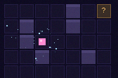
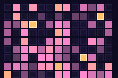

Bio
- 2020 – 2022CPGE MPmathématiques théoriques
- août 2022 – mars 2026IMT Atlantiqueingénieur IA et systèmes embarqués
- 2024Thalesquantization INT8/FP8, R&D deep learning
- 2025AirbusRAG et validation de LLM en milieu critique
- déc. 2025Georgia TechM.Sc. CS, systèmes et machine learning
- fév. 2026MPI-IS / ELLIS Tübingengroupe Schölkopf, Pinductor
- nov. 2026Thèse, Inria Flowersexploration autotélique, jusqu'en 2029
- 2020 – 2022CPGE MPtheoretical mathematics
- Aug 2022 – Mar 2026IMT AtlantiqueM.Eng. AI and embedded systems
- 2024ThalesINT8/FP8 quantization, deep learning R&D
- 2025AirbusRAG and LLM validation in safety-critical settings
- Dec 2025Georgia TechM.Sc. CS, systems and machine learning
- Feb 2026MPI-IS / ELLIS TübingenSchölkopf group, Pinductor
- Nov 2026PhD, Inria Flowersautotelic exploration, through 2029
J'explore comment des agents curieux peuvent cartographier ce que les grands modèles génératifs savent faire, et où ils échouent. Je commence en novembre 2026 une thèse dans l'équipe Flowers (Inria Bordeaux), sous la direction de Pierre-Yves Oudeyer, sur l'exploration autotélique pour l'évaluation automatique des grands modèles génératifs : plutôt que des benchmarks figés, des agents qui se fixent leurs propres objectifs pour découvrir et cartographier les capacités et vulnérabilités d'un modèle.
- nov. 2026Début de ma thèse dans l'équipe Flowers (Inria Bordeaux).
- sept. 2026Pinductor accepté à NeurIPS 2026, en poster.
- mai 2026Pinductor sur arXiv, avec le code.
- fév. 2026Début de la collaboration avec le groupe Schölkopf (MPI-IS / ELLIS Tübingen).
La sécurité de l'IA, à commencer par celle de l'auto-amélioration récursive, et la compréhension fine des LLM : rendre l'IA aussi bénéfique que possible pour les humains en limitant ses défauts et ses risques, autant que possible en open source.
I study how curious agents can map what large generative models can do, and where they fail. I am starting my PhD in November 2026 in the Flowers team at Inria Bordeaux, advised by Pierre-Yves Oudeyer, on autotelic exploration for the automatic evaluation of large generative models: instead of fixed benchmarks, agents that set their own goals to discover and map a model's capabilities and vulnerabilities.
- Nov 2026Starting my PhD in the Flowers team (Inria Bordeaux).
- Sep 2026Pinductor accepted at NeurIPS 2026 as a poster.
- May 2026Pinductor on arXiv, with code.
- Feb 2026Started collaborating with the Schölkopf group (MPI-IS / ELLIS Tübingen).
AI safety, starting with the safety of recursive self-improvement, and a fine-grained understanding of LLMs: making AI as beneficial as possible for humans while limiting its flaws and risks, in the open as much as possible.
Articles
Chaque article existe en deux formes : une page interactive où l'on peut manipuler les idées, et le document classique.
-

2026 · NeurIPS 2026 (poster) · arXivPinductor : apprendre des modèles du monde POMDP à partir d'observations, avec des priors de LLM
Un LLM propose des programmes-hypothèses sur la dynamique d'un environnement partiellement observable ; un filtre particulaire les départage à partir des observations, sans jamais voir l'état caché.
-

2026 · projet de rechercheQuality-diversity autotélique pour découvrir la sycophancie des LLM
Au lieu d'un score, un répertoire : une boucle inspirée d'ACES invente ses propres attaques, notées par un logprob sans juge, et cartographie 164 tactiques qui font plier un modèle local, dont des canaux qu'aucun humain ne peut utiliser.
Each article comes in two forms: an interactive page where you can play with the ideas, and the classic document.
-
2026 · NeurIPS 2026 (poster) · arXiv
Pinductor: learning POMDP world models from observations with language-model priors
An LLM proposes program hypotheses about the dynamics of a partially observable environment; a particle filter tells them apart from observations alone, without ever seeing the hidden state.
-
2026 · research project
Autotelic quality-diversity for discovering LLM sycophancy
A repertoire instead of a score: an ACES-inspired loop invents its own attacks, scores them with a judge-free logprob, and maps 164 tactics that make a local model cave, including channels no human can use.
Publications
- NeurIPS 2026 (poster) · arXiv 2605.13740
@inproceedings{six2026pinductor, title = {Pinductor: Learning {POMDP} World Models from Observations with Language-Model Priors}, author = {Six, V. and Panse, F. and Fajeau, Mathis and Da Costa, L. and Sharma, M. and Amayuelas, A. and Xiao, T. Z. and Hyland, D. and Hennig, P. and Sch{\"o}lkopf, B.}, booktitle = {Advances in Neural Information Processing Systems (NeurIPS)}, year = {2026}, note = {arXiv:2605.13740} }Ma contribution : j'ai introduit le vote par entropie, travaillé à la généralisation de la méthode et porté le projet sur toute la chaîne, du code aux expériences.My part: I introduced vote entropy, worked on generalizing the method, and pushed the project through the whole pipeline, from code to experiments.
IngénierieEngineering
Côté systèmes, j'écris mes propres kernels et je mesure où part le temps.
On the systems side, I write my own kernels and measure where the time goes.
- HIP-Transformer 2024 – 2025Transformer décodeur en C++/HIP, kernels d'attention écrits à la main (tuilage SRAM, backward manuel) : ×40 face au CPU, compute-bound d'après l'analyse Roofline.Decoder-only Transformer in C++/HIP with hand-written attention kernels (SRAM tiling, manual backward pass): 40× over CPU baselines, compute-bound per Roofline analysis.
- Quantization INT8/FP8 Thales · 2024Quantization et sparsité des poids de Transformers pour FPGA et GPU ; latence sous la milliseconde grâce à la fusion de couches et à l'optimisation des accès mémoire.Transformer quantization and weight sparsity for FPGA and GPU; sub-millisecond latency through hardware-aware layer fusion and memory-access optimization.
-
1 536 paires d'instructions construites de zéro, fine-tuning de bout en bout sur une H100 (QLoRA) : LoRA atteint 72,3 % contre 46,1 % pour le modèle de base, le fine-tuning complet s'effondre après une époque.1,536 instruction pairs built from scratch, end-to-end fine-tuning on one H100 (QLoRA): LoRA reaches 72.3% vs 46.1% for the base model, while full fine-tuning mode-collapses after one epoch.
- GRACE 2024 – 2025Décodage chain-of-thought pas à pas, guidé par un vérificateur contrastif : +16 % sur GSM8K sans fine-tuning supplémentaire.Step-by-step chain-of-thought decoding guided by a contrastive step verifier: +16% on GSM8K without extra fine-tuning.
CUDA · HIP · Triton · tuilage SRAMSRAM tiling · Roofline · Nsight / Omniperf · Slurm
Contact
- nomprenom8@gmail.com
- GitHub
- Google Scholar